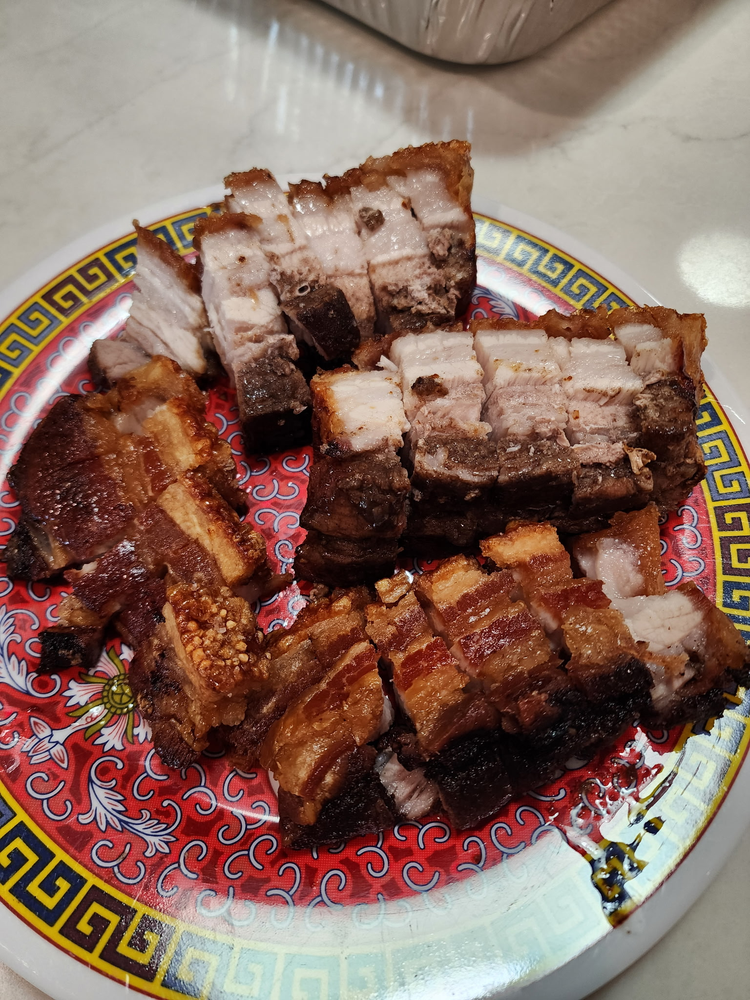

Crispy Pork (Siu Yuk)

Ingredients
- 1½ kg pork belly, skin on
Meat Side
- 8 g kosher salt
- 5 g white pepper
- 5 g five spice powder
- 6 g sugar
- 7 ml Shaoxing wine
Skin Side
- 250 g kosher salt
- 15 ml white vinegar
- 15 ml neutral oil
Directions
- Score Pork: Using a knife, make ½"-deep cuts lengthwise across the meat side only of the pork belly.
- Season Meat: Mix salt, white pepper, five-spice powder, sugar, and Shaoxing wine into a paste. Rub evenly into the meat and crevices, avoiding the skin.
- Prep Skin: Pat skin completely dry. Poke holes all over the skin with skewers or a sharp knife, piercing only the skin and fat, not the meat.
- Fit to Fryer: Cut pork belly as needed to fit your air fryer basket.
- Salt Skin: Build a foil frame around the pork with a ½" wall to keep salt contained. Brush skin with vinegar, then cover completely with salt.
- Dry Skin: Air fry at 250°F for 30 minutes, until the salt is fully dried.
- Clean Skin: Remove salt, brush off excess, and pat skin dry.
- Crisp: Brush skin with neutral oil and air fry at 400°F for 30-40 minutes, until puffed and crispy. Check at 20 minutes, then every 5 minutes. Cover any darkening spots with foil if needed.
- Serve: Rest briefly, slice, and serve.
Chef's Notes
- Most air fryers comfortably handle 1-1½ lb pork belly. For larger pieces (e.g., 3 lb), cut in half and cook in two batches.
- Select pork belly with a good meat-to-fat balance for optimal flavor and crispiness.
- Use a sharp tool to poke holes through the skin only, not into the meat. This allows fat to render and helps the skin puff and crisp.
- Pat the skin completely dry - moisture prevents crisping.
- Rub a generous layer of coarse sea salt into the skin to draw out moisture and aid crisping.
- Let the pork rest for a few minutes after cooking to allow juices to redistribute for juicier meat.
The Gumbo Page
Michael Fritsche
mbf@fritsche.org